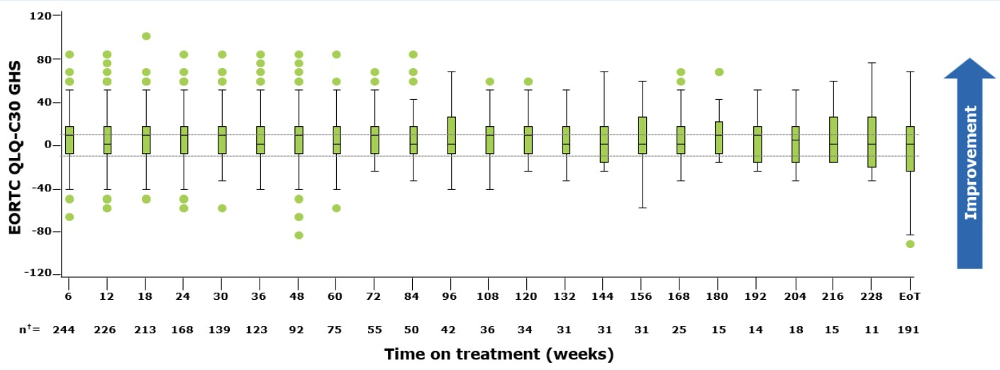
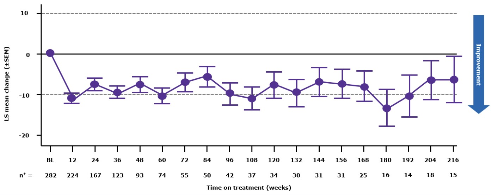
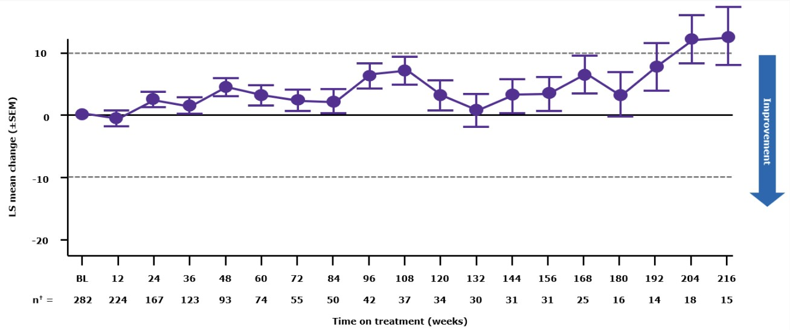
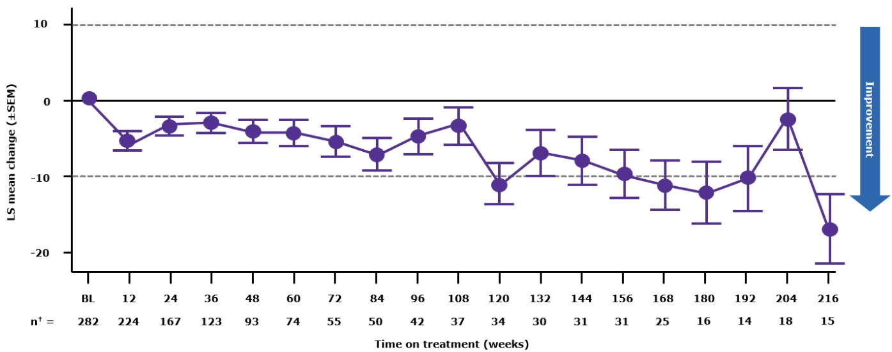

Consider: Over 228 weeks, how did HRQoL PRO scores change from baseline in patients with METex14 skipping NSCLC, as exemplified by EORTC QLQ-C30 and EQ-5D-5L scores?
Scoresremained stable
There was no meaningful change in EORTC QLQ-C30 or EQ-5D-5L scores up to 228 weeks with tepotinib.
Overall, HRQoL PRO scores remained stable.
The mean change (±SD) from baseline for EORTC QLQ-C30 GHS was −7.1 (26.66) (n=174).

Number of patients who completed the questionnaire at each visit.
The mean change (±SD) from baseline in EORTC QLQ-LC13 symptom scores for cough was −6.1 (28.16) (n=175).

Number of patients who completed the questionnaire at each visit.
The mean change (±SD) from baseline in EORTC QLQ-LC13 symptom scores for dyspnea was 7.1 (21.05) (n=175).

Number of patients who completed the questionnaire at each visit.
The mean change (±SD) from baseline in EORTC QLQ-LC13 symptom scores for chest pain was −2.3 (28.13) (n=174).

Number of patients who completed the questionnaire at each visit.
Mean change (±SD) from baseline in EQ-5D-5L EQ-VAS score: figure to be confirmedpending